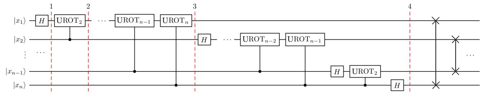

Quantum Fourier Transform
The Quantum Fourier Transform is just a change of basis, from the computational basis to Fourier one. It takes a quantum state \(\vert x \rangle = \vert x_1\ldots x_n \rangle\) and maps it to:
Where \(N=2^n\) (\(n\) = number of qubits) and \(\vert y\rangle\) represents its respective binary quantum state \(\vert y_1y_2\ldots y_n\rangle\), with \(y_i\in\{0,1\}\). (Actually, the sum \(\sum_{y=0}^{N-1}\) is a shortcut notation for \(\displaystyle\sum_{y_1=0}^1\sum_{y_2=0}^{1}\ldots\sum_{y_n=0}^{1}\))
Examples
Let's begin with the 1-qubit case, where \(N=2^1\):
So states \(\vert0\rangle\) and \(\vert1\rangle\) are mapped to states \(\vert+\rangle\) and \(\vert-\rangle\) respectively. That's what Hadamard gate does! Geometrically, this transformation brings the z-axis poles states to the x-axis poles in the Bloch sphere.
Qiskit Textbook have a nice animation which helps build intuition of what QFT does in the general case. A four-qubit state \(\vert x\rangle = \vert x_1x_2x_3x_4\rangle\) is stored using \(\vert0\rangle\) and \(\vert1\rangle\) in the computational basis. Observe that the leftmost qubit (\(x_4\)) flips with with every number increment, the next (qubit 1, \(x_3\)) flips with 2 number increments, qubit 2 (\(x_2\)) flips after 4 turns, and so on.

In the Fourier basis, all states are on the equatorial plane. The leftmost is rotated \(2\pi/16\) radians by number increment, the next qubit (\(x_3\)) rotates \(2\pi/8\) per time, \(x_2\) rotates \(2\pi/4\) and \(x_1\) with an angle of \(2\pi/2=\pi\) radians. We are doubling the angle of rotation on each qubit.

Quantum states math formulation
The above animation of quantum states in the Fourier basis can be formalized with a bit of math manipulation on the QFT formula. As we briefly stated before, when we write \(\vert y\rangle\) we are representing the state \(\vert y_1y_2\ldots y_n\rangle\), so \(y\) in decimal base is \(2^{n-1}y_1+2^{n-2}y_2+\ldots +2^0y_n\). So replacing \(\vert y\rangle\) by its decimal representation, and the sum from \(0\) to \(N-1\) to the binary equivalent, we get:
By swapping the order of the product and the sum, we got a tensor product:
Notice we went from \(\vert x\rangle = \vert x_1\rangle\otimes\vert x_2\rangle\otimes\ldots\otimes\vert x_n\rangle\) to the state above, which tells us exatly what the the transform is doing to each entry of \(x\). Regard constants, we have:
Such an operation explains the above animation: the complex exponential term is responsible for the rotation seen. Moreover, this gives us hints for building a quantum circuit to implement QFT since we explicitly know what to do on each qubit.
QFT Circuit
We'll need two atomic elements for building a circuit that implements QFT: the already known Hadamard gate and the controlled rotation gate.
We know that
We can also write Hadamard operation acting on \(x_k\in\{0,1\}\) as:
The other element, controlled rotation acts on two-qubit states \(\vert x_ix_j\rangle\) and is based on the following unitary operator:
The, Controlled Rotation operator \(CROT_k\) will be the 4x4 matrix:
Remember that \(\vert x_ix_j\rangle=\vert x_i\rangle\otimes\vert x_j\rangle\) which is a columns vector with four entries, so the operation \(CROT_k\vert x_ix_j\rangle\) is dimentionally consistent. The first qubit \(x_i\) is the control qubit and tha second, \(x_j\) is the target one. So, as an example, se what happens when applying CROT to \(\vert0x_j\rangle\) and \(\vert1x_j\rangle\):
The QFT circuit is represented below:

Let's see what's the state becomes on each checkpoited step:
The input is the \(n\)-qubit state \(\vert x\rangle=\vert x_1x_2\ldots x_n\rangle\)
- Step 1: Applys Hadamard gate on the first qubit. The state after that will be:
- Step 2: Applys Unitary Rotarion \(UROT_2\) on the first qubit, controlled by the second. State after that:
- Step 3: After applying \(UROT_k\) on qubit 1 controlled on qubit \(k\) with \(k\) from 2 to \(n\), well get, following the above pattern:
which is equal:
But \(x\) in decimal base is \(x=\displaystyle\sum_{k=1}^nx_k2^{n-k}\), so whats inside the above exponential is just \(2\pi i x/2^n\), we then simplyfies the output to:
- Step 4: We now apply the above block of steps to the remaining qubits, the process is very similar, and in the end the final state will be:
The constants multiplies to \(\frac{1}{\sqrt N}\), so what we get as final state is just the formula derived previously, but in reversed order. Notice that the first transformed qubit is \(\vert0\rangle + e^{2\pi i x2^{-n}} \vert1\rangle\), where it was supposed to be \(\vert0\rangle + e^{2\pi i x2^{-1}} \vert1\rangle\) in our desired QFT formula, but that's not a problem at all, we just reverse the order of qubits and done!